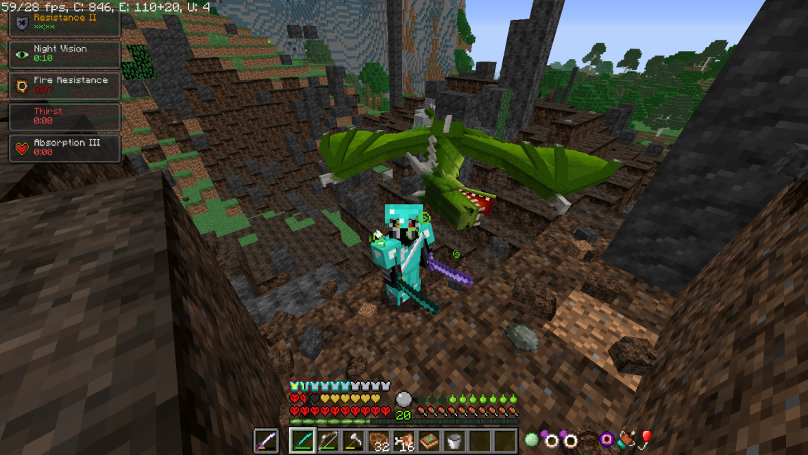
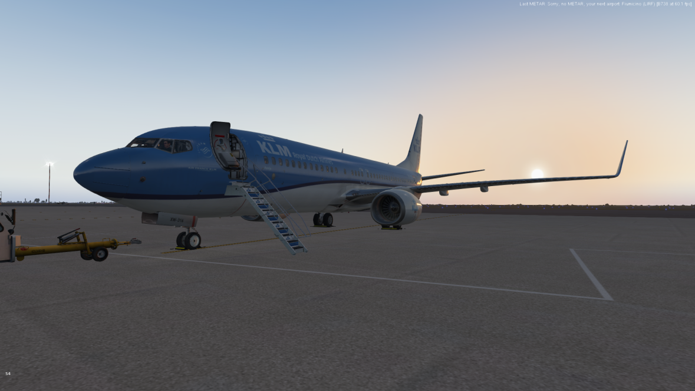
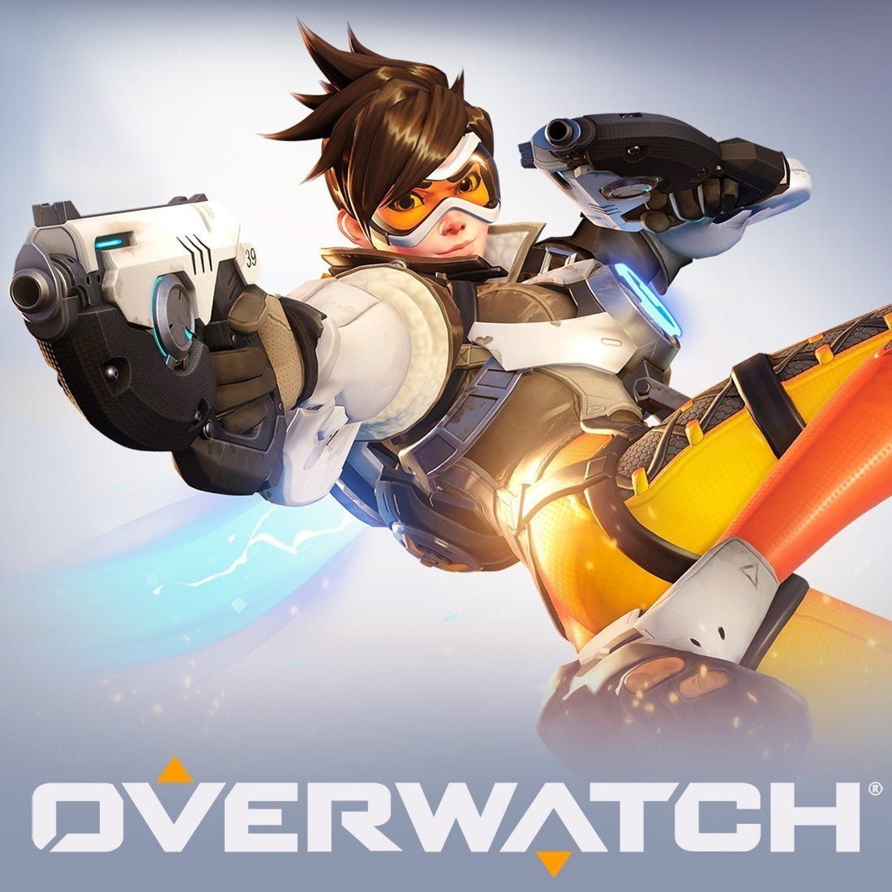
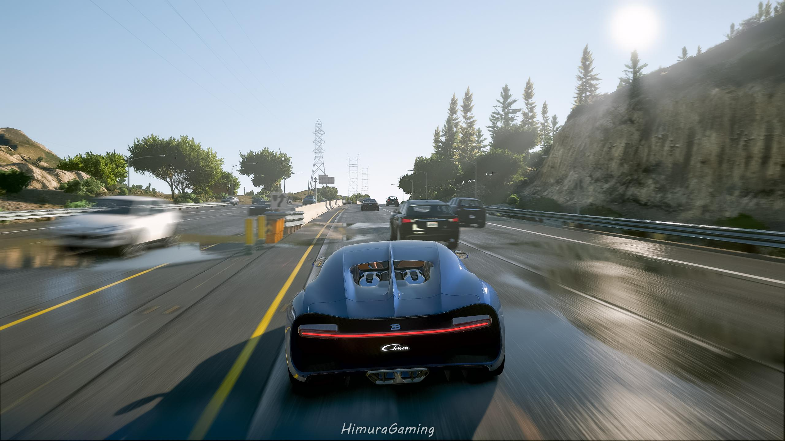
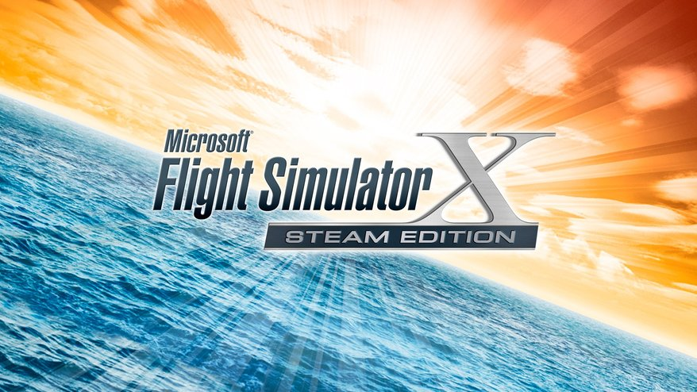

)
)Ik vind gamen leuk, hier is mijn top 5 favoriete games met alle informatie er bij:
| Game | Maker | Waarom vind ik het leuk? | Plaatje |
|---|---|---|---|
| 1. Minecraft | Mojang, Microsoft | Minecraft vind ik leuk omdat er genoeg variatie is tussen hoe je Minecraft kan spelen, het is nooit saai want er is altijd wel iets te doen met alle mods die je hebt, ik speel bijvorbeeld heel veel RLCraft, het is een "realistische" versie van normaal Minecraft maar het heeft ook heel veel fictionele dieren en beesten, zoals draken en demonen, het is heel lastig vergeleken met normaal Minecraft. (Rechts is een foto van toen ik mijn eerste draak had gedood.) |
 |
| 2. X Plane 11 | Laminar Research | X Plane 11 is een simulatie spel, het gaat over een vliegtuig (X Plane) vliegen van opstarten van het vliegtuig tot het afsluiten van het vliegtuig, ik speel het niet vaak omdat het duurt wel lang om een vlucht te plannen maar het is wel heel leuk omdat ik een vliegtuig enthousiast ben. |  |
| 3. Overwatch | Blizzard Entertainment | Overwatch is een FPS Actie game met 2 teams van 6 waarbij je een checkpoint/point moet capturen om te winnen, ik speel het ook niet zo vaak meer maar ik speel het soms voor de lol, niet perse om te winnen, vroeger speelde ik het wel heel vaak. |  |
| 4. GTA V | Rockstar Games | Ik speel niet vaak meer de normale versie van GTA V, als ik het speel is het GTA Online maar dat is niet meer zo leuk meer, wat ik veel speel is FiveM wat een ge modde versie is van GTA V met speciale servers die allemaal custom voertuigen heeft, wat ik wel leuk vind, meestal speel ik dat ook gewoon voor de lol. |  |
| 5. FSX:SE | Dovetail Games/Steam | Dit is ook een simulatie spel dat je WEL online multiplayer kan spelen, dit speel ik niet zo vaak sinds ik toch X Plane 11 heb wat veel realistischer is, als ik dit speel speel ik Multiplayer wat wel leuk is, maar FSX is heel oud en de flight dynamics (hoe realistisch het vliegen voelt) is een veel lager niveau dan de nieuw ge-releasde X Plane 11 |  |